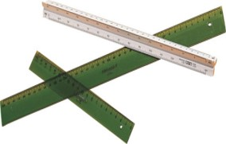
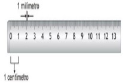

La regla graduada se utiliza para medir y transportar magnitudes lineales. En general, en dibujo técnico se emplean reglas graduadas de dos o tres milímetros de grosor, y están graduadas en milímetros. Un tipo especial de regla graduada es el escalímetro, con sección triangular, que dispone de diferentes escalas: milímetros, pulgadas, etc.

